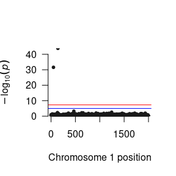

A schematic depiction of the Two-Factor GWAS Model
The Two Factor model is an extension of the One Factor Model. The difference between the one and two factor models are the additional regression coefficient, and the correlations between the two latent variables.
Unlike the One Factor GWAS model, the Two Factor GWAS model does not have an analogue in the current GWAS literature but nevertheless plays an integral role the many genetic theories of comorbidity and pleiotropy. For example, multivariate twin models routinely detect genetic variation across a range of phenotypes, and interpret these findings in terms of genetic variants that are shared between the phenotypes. LD score regression analyses take this one step further, testing for genetic overlap between phenotypes based on summary statistics from univariate GWAS. The two factor GWAS model takes this theoretical hypothesis further than existing methods by allowing users to explicitly test for pleiotropy in a single model. This framework allows users to think about phenotypes from an explicitly multivariate perspective that cannot be achieved with alternative GWAS software. A general schematic depiction of the two factor model is presented in the figure below, but users should keep in mind that the number of items in the analysis and the specific parameterization of the model can be adjusted to suit the specific research question.
In the Figure below, the latent factor (F1) is the underlying (unmeasured) cause the observed items (xk). The association between the latent factor and the observed indicators, (x1, x2 & x3), are estimated by the factor loadings (λ1, λ2, & λ3, respectively). The residual variances (δ1, δ2, & δ3) indicate the remaining variance in (xk) that is not shared with the latent factor. The regression of the latent factor on the SNP (for all SNPs in the analysis) is depicted by (βF1). The corresponding factor loadings for the second latent factor (F1) and the yk variables can be interpreted similarly. The new parameter that is added to the two factor model that was absent from the one factor model is the covariance between the latent variables (ψ). This parameter can be interpreted in conjunction with the βF1 and βF2 parameters to assess the impact of the genomic associations on comorbidity.
For the two factor model to be identified, you will need at least three items for each factor (as was the case with the one factor model). It is a good idea to use more items than the minimum; more items will improve the measurement accuracy of the latent variables.
A schematic depiction of the Two-Factor GWAS Model
To demonstrate how to conduct a Two Factor GWAS, we use the same simulated GWAS data for a one factor GWAS model with 6,000 individuals consisting of 2,000 SNPs, and simulated novel phenotypic data with six items (A1, A2 & A3 for F1, and B1, B2 & B3 for F2) as well as 6 covariates (that are a proxy for age, sex, ancestry principle components or other confounds). The latent variables F1 and F2 were simultaneously regressed on each SNP.
The first step is opening R and loading the GW-SEM package into the R computing environment (which will also load all of the dependencies, such as OpenMx), which can be achieved by using the command below:
library(gwsem)
#> Loading required package: OpenMx
#> To take full advantage of multiple cores, use:
#> mxOption(key='Number of Threads', value=parallel::detectCores()) #now
#> Sys.setenv(OMP_NUM_THREADS=parallel::detectCores()) #before library(OpenMx)
#>
#> Attaching package: 'gwsem'
#> The following object is masked from 'package:base':
#>
#> signifThe next step is to load the phenotypic data. This will include any items that define the latent variables or necessary covariates that you will include in the analysis, such as age, sex, or ancestry principle components. Once the phenotypic data has been loaded, it is advisable to make sure the data has been loaded properly by, e.g., inspecting the first few lines of data, looking at the means and variances, etc. This can be done with the code below:
location <- 'https://jpritikin.github.io/gwsem/gwsemTwoFacExample'
TwoDat <- read.table(file.path(location, "phenoTwoData.txt"), header=TRUE)
head(TwoDat)
#> A1 A2 A3 B1 B2 B3
#> 1 0.99530058 0.73647170 1.8979517 0.16796993 0.48912621 -1.151701
#> 2 1.69508013 2.97669551 2.5059896 0.60355319 0.09443592 0.885876
#> 3 0.48069152 0.07470696 0.2401195 0.26878160 1.37390510 -0.348631
#> 4 0.43838397 1.46105679 0.2129391 2.85912185 1.46017993 2.545553
#> 5 1.58112970 -0.65526690 -0.2898117 -0.08739975 1.08364671 1.392842
#> 6 0.05250986 1.23666372 -0.9969216 0.76547539 1.16942874 0.359331
#> pc1 pc2 pc3 pc4 pc5
#> 1 -1.73534591 -0.005949438 -0.5308992 0.76801845 -1.50932522
#> 2 0.47007030 -0.127011839 0.7976675 -0.64860921 0.05576587
#> 3 1.33173044 1.480261629 -1.6033764 -0.04209832 -0.57337829
#> 4 -0.07900914 0.097746365 -1.2246490 0.97834643 0.14235702
#> 5 0.63493316 1.940078145 1.5124544 -0.32060878 0.16354672
#> 6 -0.62710577 0.051160950 0.9269276 -0.02472826 2.79142175Once the data is loaded into R, you can recode the data, transform it, and tell R if we have ordinal or binary indicators using mxFactor(). The data for this example are simulated and continuous, and therefore, we will not be doing anything now, but if you would like to chop the indicators up into binary or ordinal variables, this would be when you would do it.
After you are satisfied the data is in the appropriate shape we can build a two factor GWAS model with the following command:
twoFac <- buildTwoFac(phenoData = TwoDat, # what the data object is (which you read in above)
F1itemNames = c("A1", "A2", "A3"), # what the items of the latent factor are
F2itemNames = c("B1", "B2", "B3"), # what the items of the latent factor are
covariates=c('pc1','pc2','pc3','pc4','pc5'), # what covariates that you want to include in the analysis
fitfun = "WLS",
exogenous = T) # and the fit function that you would like to use (WLS is much faster than ML)You can take this object (addFac) which is technically an OpenMx model, and fit it using mxRun()
twoFacFit <- mxRun(twoFac)
#> Running TwoFac with 53 parameters
summary(twoFacFit)
#> Summary of TwoFac
#>
#> free parameters:
#> name matrix row col Estimate Std.Error lbound ubound
#> 1 snp_to_F1 A F1 snp 0.0204846184 0.020988048
#> 2 snp_to_F2 A F2 snp 0.0576206101 0.021378949
#> 3 F1_lambda_A1 A A1 F1 0.7346342607 0.013551599
#> 4 F1_lambda_A2 A A2 F1 0.7379333831 0.013631470
#> 5 F1_lambda_A3 A A3 F1 0.7377062366 0.013901195
#> 6 F2_lambda_B1 A B1 F2 0.7303859008 0.013596925
#> 7 F2_lambda_B2 A B2 F2 0.7271160639 0.013485047
#> 8 F2_lambda_B3 A B3 F2 0.7322454226 0.013603676
#> 9 pc1_to_A1 A A1 pc1 -0.0098844413 0.013253671
#> 10 pc1_to_A2 A A2 pc1 -0.0028782404 0.013078169
#> 11 pc1_to_A3 A A3 pc1 -0.0024240569 0.012972208
#> 12 pc1_to_B1 A B1 pc1 0.0186090846 0.013413044
#> 13 pc1_to_B2 A B2 pc1 0.0055690079 0.013444384
#> 14 pc1_to_B3 A B3 pc1 0.0286550850 0.013081062
#> 15 pc2_to_A1 A A1 pc2 -0.0233794780 0.013537836
#> 16 pc2_to_A2 A A2 pc2 0.0057159064 0.013110043
#> 17 pc2_to_A3 A A3 pc2 -0.0223660926 0.013434802
#> 18 pc2_to_B1 A B1 pc2 -0.0052081586 0.013003029
#> 19 pc2_to_B2 A B2 pc2 0.0094819900 0.013148629
#> 20 pc2_to_B3 A B3 pc2 0.0135662703 0.012938699
#> 21 pc3_to_A1 A A1 pc3 0.0127788665 0.013261193
#> 22 pc3_to_A2 A A2 pc3 0.0047702053 0.013254165
#> 23 pc3_to_A3 A A3 pc3 -0.0026084923 0.013391766
#> 24 pc3_to_B1 A B1 pc3 0.0054261628 0.013078376
#> 25 pc3_to_B2 A B2 pc3 -0.0027204869 0.013280429
#> 26 pc3_to_B3 A B3 pc3 -0.0082655820 0.013399066
#> 27 pc4_to_A1 A A1 pc4 0.0134712533 0.012907348
#> 28 pc4_to_A2 A A2 pc4 -0.0073100816 0.013191213
#> 29 pc4_to_A3 A A3 pc4 0.0098127266 0.013130184
#> 30 pc4_to_B1 A B1 pc4 -0.0085092911 0.013096330
#> 31 pc4_to_B2 A B2 pc4 -0.0244776304 0.013156055
#> 32 pc4_to_B3 A B3 pc4 -0.0303754950 0.013213978
#> 33 pc5_to_A1 A A1 pc5 0.0076189162 0.013123408
#> 34 pc5_to_A2 A A2 pc5 0.0211575205 0.013375857
#> 35 pc5_to_A3 A A3 pc5 0.0026325210 0.013428760
#> 36 pc5_to_B1 A B1 pc5 0.0004494821 0.012912829
#> 37 pc5_to_B2 A B2 pc5 0.0110870638 0.012814509
#> 38 pc5_to_B3 A B3 pc5 0.0015379813 0.012891719
#> 39 snp_res S snp snp 0.4914271980 0.012497156 0.001
#> 40 A1_res S A1 A1 0.5088743473 0.014383598 0.001
#> 41 A2_res S A2 A2 0.5083565302 0.014459753 0.001
#> 42 A3_res S A3 A3 0.5094838535 0.014464749 0.001
#> 43 B1_res S B1 B1 0.5094995862 0.014217909 0.001
#> 44 B2_res S B2 B2 0.5106029750 0.014287910 0.001
#> 45 B3_res S B3 B3 0.5083648346 0.014650971 0.001
#> 46 facCov S F1 F2 0.3275215106 0.015546164
#> 47 snpMean M 1 snp 0.9892453763 0.009049099
#> 48 A1Mean M 1 A1 0.5289081056 0.020160666
#> 49 A2Mean M 1 A2 0.5277992917 0.020173286
#> 50 A3Mean M 1 A3 0.5283450317 0.020211257
#> 51 B1Mean M 1 B1 0.5001707056 0.020351738
#> 52 B2Mean M 1 B2 0.5008052998 0.020248122
#> 53 B3Mean M 1 B3 0.4989284534 0.020406069
#>
#> Model Statistics:
#> | Parameters | Degrees of Freedom | Fit (r'Wr units)
#> Model: 53 41947 3.000038
#> Saturated: 35 41965 0.000000
#> Independence: 14 41986 NA
#> Number of observations/statistics: 6000/42000
#>
#> chi-square: χ² ( df=17 ) = 3.000038, p = 0.9999305
#> CFI: NA
#> TLI: NA (also known as NNFI)
#> RMSEA: 0 *(Non-centrality parameter is negative) [95% CI (0, 0)]
#> Prob(RMSEA <= 0.05): 1
#> To get additional fit indices, see help(mxRefModels)
#> timestamp: 2020-07-10 20:14:37
#> Wall clock time: 0.5719059 secs
#> optimizer: SLSQP
#> OpenMx version number: 2.17.4
#> Need help? See help(mxSummary)This is strongly advised, as it is a great time to test whether the model is being specified the way you want it to be and that you are not getting unexpected estimates.
Provided that the model looks reasonable, you can plug the model that you have built into the GWAS function using the command below:
library(curl)
curl_download(file.path(location, 'example.pgen'),
file.path(tempdir(),'example.pgen'))
curl_download(file.path(location, 'example.pvar'),
file.path(tempdir(),'example.pvar'))
GWAS(model = twoFac, # what model object you would like to fit
snpData = file.path(tempdir(),'example.pgen'), # that path to the snpData file.
out=file.path(tempdir(), "twoFac.log")) # the file that you would like to save the full results into
#> Running TwoFac with 53 parameters
#> Done. See '/tmp/RtmprJh9JP/twoFac.log' for results
# the index of the snps (how many) you would like to fitNote about the snpData argument: The path to your snpData will likely include switching to a different directory (as you will likely do your analysis in a different folder than your SNP data). All you need to do is point to the data using relative paths. Further, it will accept plink bed/bim/fam or pgen/psam/pvar data or bgen data (Oxford format)
Note about the SNP argument: This can be used to run a limited number of SNP (i.e. not the whole snp file). This is particularly useful if you would like to run chop up a chr into several parts without cutting you actual genotype data into separate files.
While the GWAS function will take a while and frequently be done on a computing cluster, it is very useful to run a few SNPs (say 10 or 50) in an interactive session to ensure that: all of your relative file paths to the genotypes are correct, the model is taking a reasonable amount of time (i.e. 1-2 seconds/snp), the SNPs are giving sensible estimates, etc., as the results from a few SNPs can often tell you if there is a problem and that you are running a nonsensical model.
Refer to local documentation to learn how to submit jobs to your cluster queue submission systems. The R script that you provide will typically be similar to the one below:
library(gwsem)
TwoDat <- read.table(file.path(location, "phenoTwoData.txt"), header=TRUE)
head(TwoDat)
#> A1 A2 A3 B1 B2 B3
#> 1 0.99530058 0.73647170 1.8979517 0.16796993 0.48912621 -1.151701
#> 2 1.69508013 2.97669551 2.5059896 0.60355319 0.09443592 0.885876
#> 3 0.48069152 0.07470696 0.2401195 0.26878160 1.37390510 -0.348631
#> 4 0.43838397 1.46105679 0.2129391 2.85912185 1.46017993 2.545553
#> 5 1.58112970 -0.65526690 -0.2898117 -0.08739975 1.08364671 1.392842
#> 6 0.05250986 1.23666372 -0.9969216 0.76547539 1.16942874 0.359331
#> pc1 pc2 pc3 pc4 pc5
#> 1 -1.73534591 -0.005949438 -0.5308992 0.76801845 -1.50932522
#> 2 0.47007030 -0.127011839 0.7976675 -0.64860921 0.05576587
#> 3 1.33173044 1.480261629 -1.6033764 -0.04209832 -0.57337829
#> 4 -0.07900914 0.097746365 -1.2246490 0.97834643 0.14235702
#> 5 0.63493316 1.940078145 1.5124544 -0.32060878 0.16354672
#> 6 -0.62710577 0.051160950 0.9269276 -0.02472826 2.79142175
twoFac <- buildTwoFac(phenoData = TwoDat, # data object
F1itemNames = c("A1", "A2", "A3"), # items of the first latent factor
F2itemNames = c("B1", "B2", "B3"), # items of the second latent factor
covariates=c('pc1','pc2','pc3','pc4','pc5'), # covariates
fitfun = "WLS",
exogenous = T)
GWAS(model = twoFac,
snpData = file.path(tempdir(), 'example.pgen'),
out=file.path(tempdir(), "twoFac.log"))
#> Running TwoFac with 53 parameters
#> Done. See '/tmp/RtmprJh9JP/twoFac.log' for resultsThe next step is to read the results into R. The output from the GWAS function contains all of the estimates and standard errors for all parameters in the model (for each SNP), as well as other general model fitting information. While you are unlikely to want to read all of this output into R, it is useful to do this on a small test GWAS analysis to ensure that you are getting reasonable results and to familiarize yourself with what information is available, in case you need to explore a specific parameter or model in more detail. This can be done using the command below:
More likely, you are going to want to read the results into R for specific coefficients that inform a particular hypothesis. For the two factor model, we might want to look at both regression paths from the SNP to each latent factor as well as the covariance between the latent factors for jointly significant SNPs. To read the data for all three parameters of interest into R we can use the loadResults function. This function can be repeated for as many parameters that you want to read into R. It takes takes two arguments: the path to the data and the column name from the results file for the parameter that you want to examine.
succinct <- loadResults(path = file.path(tempdir(), "twoFac.log"), focus = paste0("snp_to_F",1:2))
succinct1 <- signif(succinct, "snp_to_F1")
succinct2 <- signif(succinct, "snp_to_F2")We can then construct a Manhattan plot using the GW-SEM plot() function to visually inspect the general pattern of associations between the SNPs and each factor.

For the Two Factor Model, we will likely want to examine pleiotropic genetic effects by looking at how the pattern of SNP regression affect the correlation between the latent factors. We would expect that if a single SNP was associated with both factors, we would see a reduction in the correlation between the factors. Accordingly, we can sort the SNP results that we read into R by the largest Z statistic to see whether there were any SNPs jointly predicted both latent factors.
To demonstrate the intricacies of the Two Factor GWAS model, when simulating the data, we randomly chose snp141 to be associated with both factors, snp50 to be associated with F1 only, and snp719 to be associated with F2 only.
head(succinct1[order(succinct1$Z, decreasing = T),])
#> MxComputeLoop1 CHR BP SNP A1 A2 statusCode catch1 snp_to_F1
#> 1: 142 1 141 snp141 B A OK NA 0.35513064
#> 2: 51 1 50 snp50 A B OK NA 0.30405528
#> 3: 469 1 468 snp468 B A OK NA 0.08488139
#> 4: 1245 1 1244 snp1244 B A OK NA 0.07377304
#> 5: 133 1 132 snp132 A B OK NA 0.07040013
#> 6: 1718 1 1717 snp1717 A B OK NA 0.06241153
#> snp_to_F2 Vsnp_to_F1:snp_to_F1 Vsnp_to_F2:snp_to_F2 Z
#> 1: 0.3220622714 0.0006427296 0.0006405601 14.007931
#> 2: -0.0005456362 0.0006603582 0.0006263756 11.832125
#> 3: 0.0251987798 0.0006209106 0.0006214755 3.406418
#> 4: 0.0139381304 0.0006123987 0.0006169231 2.981127
#> 5: 0.0197922928 0.0006348669 0.0006404336 2.794037
#> 6: 0.0081323251 0.0006193158 0.0006167869 2.507891
#> P
#> 1: 1.394079e-44
#> 2: 2.663118e-32
#> 3: 6.582131e-04
#> 4: 2.871894e-03
#> 5: 5.205456e-03
#> 6: 1.214540e-02
head(succinct2[order(succinct2$Z, decreasing = T),])
#> MxComputeLoop1 CHR BP SNP A1 A2 statusCode catch1 snp_to_F1
#> 1: 142 1 141 snp141 B A OK NA 0.355130641
#> 2: 720 1 719 snp719 B A OK NA 0.031123462
#> 3: 1836 1 1835 snp1835 B A OK NA 0.046207990
#> 4: 1504 1 1503 snp1503 B A OK NA 0.024659160
#> 5: 1943 1 1942 snp1942 A B OK NA 0.027306283
#> 6: 1047 1 1046 snp1046 B A OK NA -0.004855771
#> snp_to_F2 Vsnp_to_F1:snp_to_F1 Vsnp_to_F2:snp_to_F2 Z P
#> 1: 0.32206227 0.0006427296 0.0006405601 12.725062 4.291361e-37
#> 2: 0.29285060 0.0006145705 0.0006546552 11.445632 2.472942e-30
#> 3: 0.06551444 0.0006257175 0.0006267728 2.616869 8.874046e-03
#> 4: 0.06542593 0.0006245056 0.0006363121 2.593671 9.495741e-03
#> 5: 0.06326570 0.0006197235 0.0006243532 2.531938 1.134340e-02
#> 6: 0.06100967 0.0006305413 0.0006396459 2.412286 1.585283e-02As can be seen, snp141 significantly predicts both latent factors. Let’s take a look at this correlation between the latent factors for this SNP.
First, let’s read in the factor correlation results, specifically asking to also load the standard errors, and treating the data object as a data frame. This makes it easier to use base R functions to search through the results. Let us look at the factor correlation for snp141, as well as snp50 and snp719, and a few other snps (say the first 6 in the results file).
facCov <- loadResults(path = file.path(tempdir(), "twoFac.log"), focus = "facCov")
subset(facCov, SNP == "snp141")
#> MxComputeLoop1 CHR BP SNP A1 A2 statusCode catch1 facCov
#> 1: 142 1 141 snp141 B A OK NA 0.3010986
#> VfacCov:facCov
#> 1: 0.0002510583
subset(facCov, SNP == "snp50")
#> MxComputeLoop1 CHR BP SNP A1 A2 statusCode catch1 facCov VfacCov:facCov
#> 1: 51 1 50 snp50 A B OK NA 0.3331035 0.0002418059
subset(facCov, SNP == "snp719")
#> MxComputeLoop1 CHR BP SNP A1 A2 statusCode catch1 facCov
#> 1: 720 1 719 snp719 B A OK NA 0.3293708
#> VfacCov:facCov
#> 1: 0.0002384187
head(facCov)
#> MxComputeLoop1 CHR BP SNP A1 A2 statusCode catch1 facCov VfacCov:facCov
#> 1: 1 1 0 snp0 B A OK NA 0.3287116 0.0002406796
#> 2: 2 1 1 snp1 A B OK NA 0.3289716 0.0002414917
#> 3: 3 1 2 snp2 B A OK NA 0.3280331 0.0002410056
#> 4: 4 1 3 snp3 A B OK NA 0.3279913 0.0002408202
#> 5: 5 1 4 snp4 A B OK NA 0.3282823 0.0002410134
#> 6: 6 1 5 snp5 B A OK NA 0.3280614 0.0002412557As can be seen, there is a marked reduction on the correlation between the two latent factors for snp141 that is not present for the other SNPs that are associated with only one of the factors, nor for SNPs that are not associated with either factor. Accordingly, we should interpret both the associations with the latent factors and the reduced correlation between the phenotypes when discussing the results.
Before running any sort of analysis in GW-SEM, users should have a general understanding of the latent traits that they are interested in examining. Specifically, for the one-factor model, the items that load onto the latent variable should be established prior to running the GWAS, or the user risks conducting an analysis that does not test their intended hypothesis. For example, if the structure of the latent factor differs from the model written in GW-SEM (model misspecification), any conclusions that are drawn from the analysis are questionable. Alternatively, if there are items that do not load onto the latent factor, this may dilute the GWAS signal. The best, and most interpretable, results will come from a clearly defined, well specified, phenotypic model.